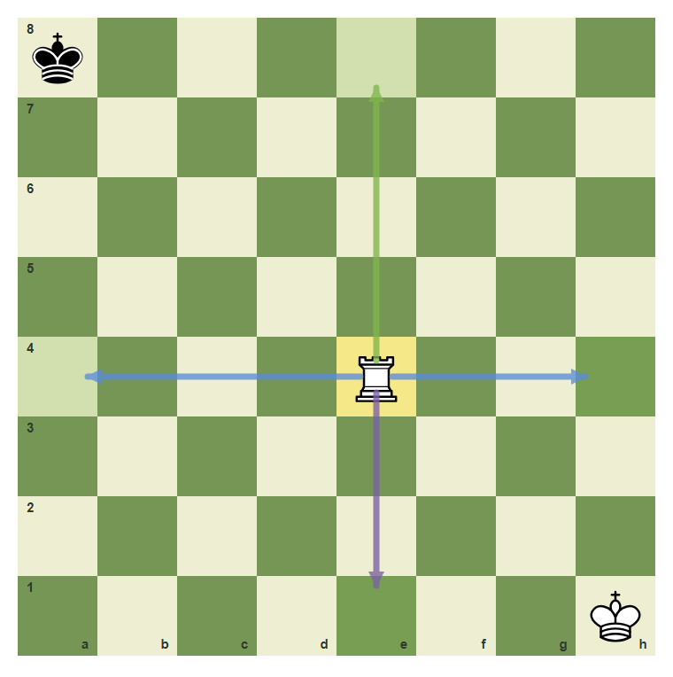
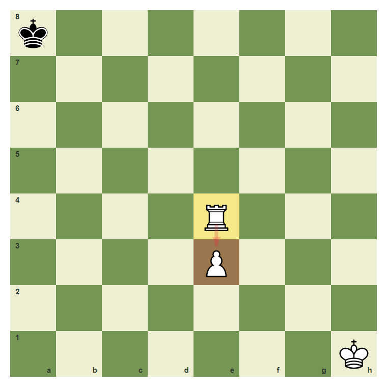
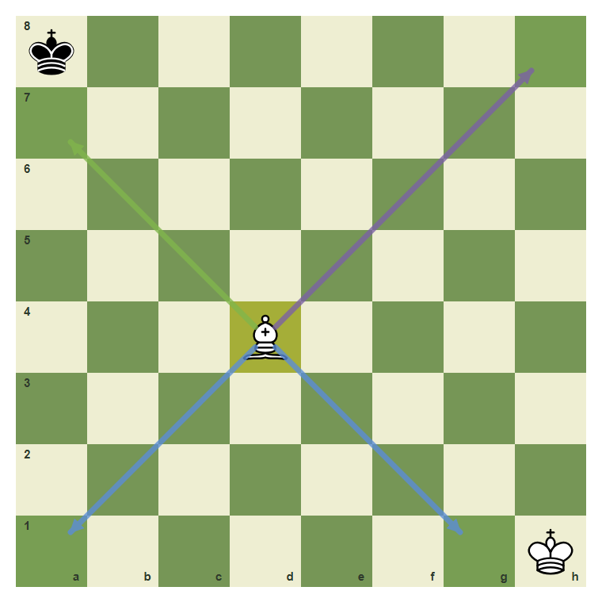
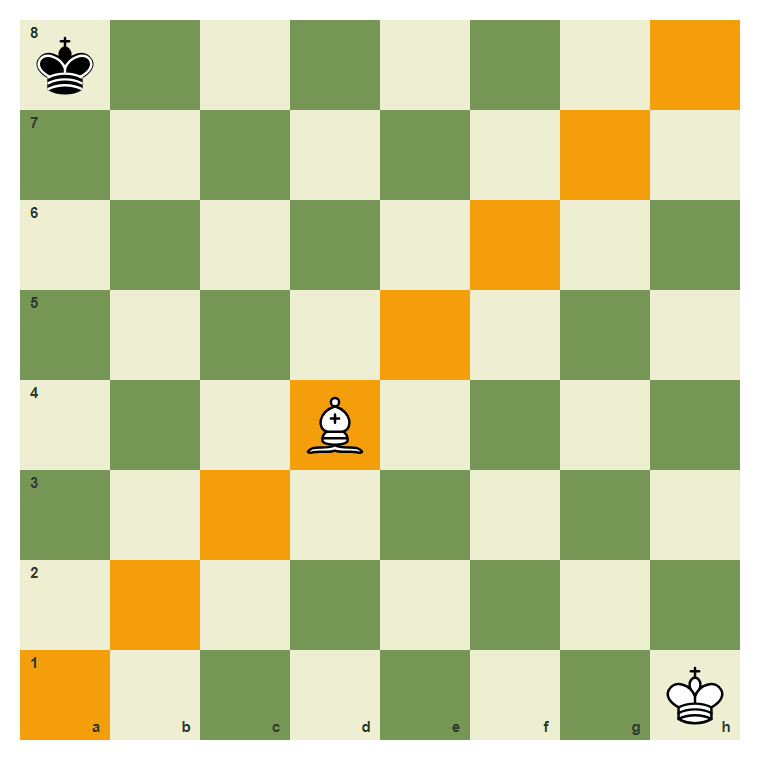
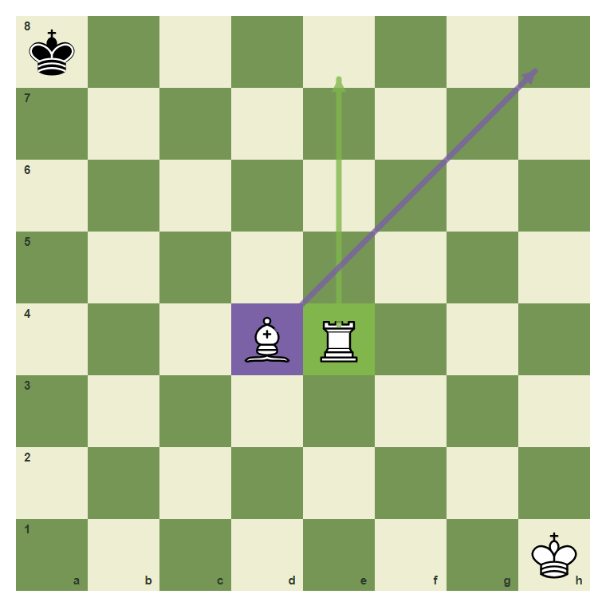
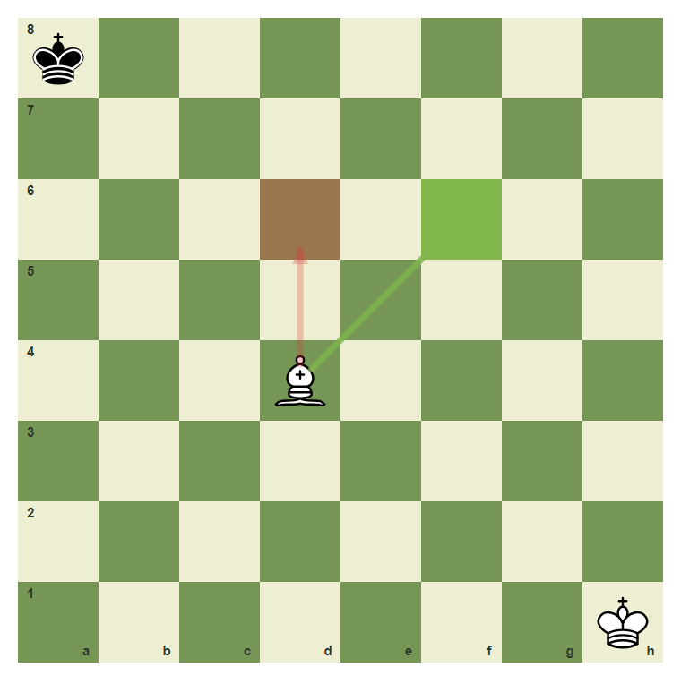

Rooks And Bishops
Straight lines and diagonals are the first long-range patterns.
- Move a rook along ranks and files.
- Move a bishop along diagonals.
- Notice when friendly pieces block long-range pieces.
- Explain why bishops stay on one color complex.
Rooks Use Files And Ranks
The rook is the straight-line piece. It moves up, down, left, or right as far as the path is clear. It cannot jump over pieces.
Rook lines from e4

From e4, a rook moves along the e-file or across the 4th rank.
Own pieces block rooks

The white pawn on e3 blocks the rook. The rook cannot move through its own pawn.
Bishops Use Diagonals
The bishop is the diagonal long-range piece. Because every diagonal keeps the same square color, a bishop that starts on a light square always stays on light squares.
Bishop diagonals from d4

A bishop on d4 moves only on diagonals.
The bishop stays on one color

This bishop is on a dark-square diagonal. It will never land on a light square.
Rook and bishop side by side

The rook on e4 uses straight lines. The bishop on d4 uses diagonals.
Move the rook to e8
Move the rook from e4 to e8 along the e-file.
Common Mistake
Common mistake: moving a bishop straight
A bishop on d4 cannot move to d6. That is a straight-file move, and bishops only use diagonals.

d4 to d6 is wrong. d4 to f6 is diagonal and legal if the path is clear.
Chapter Checkpoint
Which lines does a rook use?
A rook moves along:
Can a bishop change color?
A bishop that starts on a dark square can later land on a light square:
What blocks a rook?
A rook is blocked by: